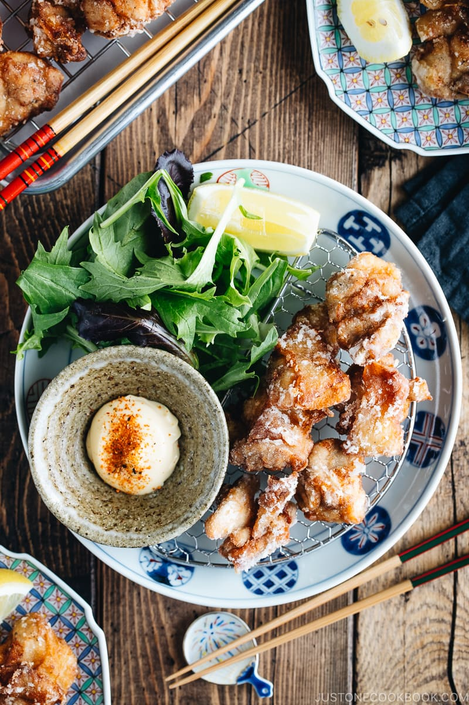

Karaage

Karaage (唐揚げ), or Japanese fried chicken, is a classic dish you can find at any Japanese home, bento lunch box, street-side stalls, restaurants, or diners. Come in bite-size nuggets, anyone who has tried the fried chicken can tell you how deliciously addicting it can be.
I grew up eating a countless number of karaage, and mom’s version was always the best. Just like any Japanese home cook in her generation, mom never shied away from deep frying, especially when it comes to a dish worthy to make for the family. The chicken always turned out with cracker-crisp skin and the meat absolutely something you want to indulge with great abandon. Thanks to mom, I’m able to share the fried chicken love with you. And I promise: it’s going to be really good!
Ingredients
- 1½ lb boneless, skin-on chicken thighs
- ½ tsp kosher salt (Diamond Crystal; use half for table salt)
- freshly ground black pepper
- 2 Tbsp potato starch or cornstarch
- 2 Tbsp all-purpose flour (plain flour)
- 4 cups neutral-flavored oil (vegetable, rice bran, canola, etc.)
For the Seasonings
- 1 knob ginger
- 1 clove garlic
- ½ Tbsp soy sauce
- ½ Tbsp sake
- ½ tsp roasted sesame oil
For Serving (Optional)
- lemon wedges
- Japanese mayonnaise
- shichimi togarashi (Japanese seven spice)
Preparation
- Gather all the ingredients.
- Cut each chicken thigh into 2-inch pieces and season with salt and freshly ground black pepper.
- Grate the ginger (you will only need ½ tsp) and mince the garlic (I love this garlic press).
- In a large bowl, combine the ginger, garlic, soy sauce, sake, and sesame oil. Whisk it all together.
- Add the chicken to the bowl and mix it with your hands. Cover and keep in the refrigerator to marinate for 30 minutes.
- Pour the oil into a heavy-bottomed pot (I used a Dutch oven) and heat it to 325ºF (163ºC) on medium heat.
- Meanwhile, prepare the potato starch and all-purpose flour in separate piles.
- First, lightly dredge each marinated chicken piece in the flour and dust off the excess flour. Then, dredge it in the potato starch and remove the excess starch.
- Continue with the remaining chicken pieces.
- When the oil temperature has reached 325ºF (163ºC) (you’ll know it’s ready when you insert a wooden chopstick into the oil and small bubbles appear around it), gently submerge each chicken piece in the oil. Do not overcrowd the pot; add only 3-5 pieces at a time. If you put too many pieces in at once, the oil temperature will drop quickly, and the chicken will end up absorbing too much oil.
- First Deep-Frying: Deep-fry for 90 seconds, or until the outside of the chicken is a light golden color. If the chicken browns too quickly, then the oil temperature is too high. Either put a few more pieces of chicken in the oil or lower the heat. Controlling the oil temperature at all times is very important for deep-frying. Transfer the chicken pieces to a wire rack to drain the excess oil.
- The residual heat will continue to cook the chicken as it rests on the wire rack. Continue deep-frying the remaining chicken pieces. Between batches, pick up and discard the crumbs in the oil with a fine-mesh sieve. This keeps the oil clean and prevents it from becoming darker.
- Second Deep-Frying: Now, heat the oil to 350ºF (177ºC). Place 3 to 5 pieces of the resting chicken back into the oil and deep-fry for 45 seconds, or until the skin is golden brown and crispy. Transfer them to a wire rack to drain the excess oil. Continue with the remaining chicken pieces.
- The left photo shows the chicken pieces after the first frying and the right photo shows them after the second frying. You can see the chicken pieces on the right are slightly darker in color.